A husband narrates his wife's bucket-list trip like a nature documentary gone wrong. She is fearless and game for anything. He is along for the ride and mildly terrified. Written in step with the journey.
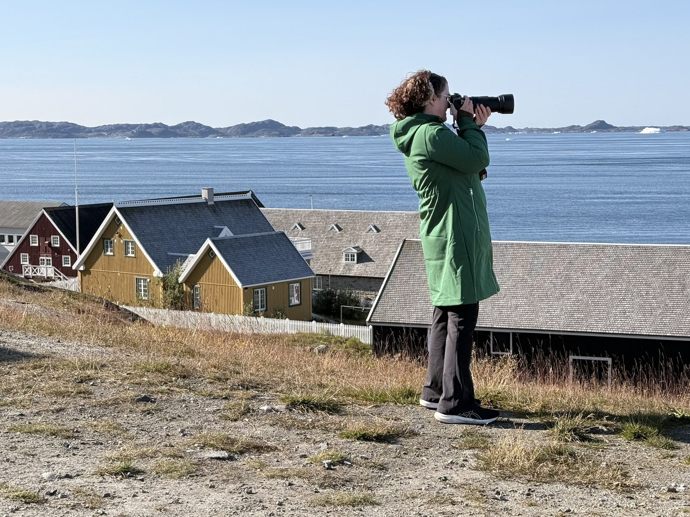
TravelersBarry and Kris
RouteReykjavík, Golden Circle, Ísafjörður, Qaqortoq, Nuuk, St. John's
ChaptersTen, and counting
One · Home, the days before
Ready and Restless
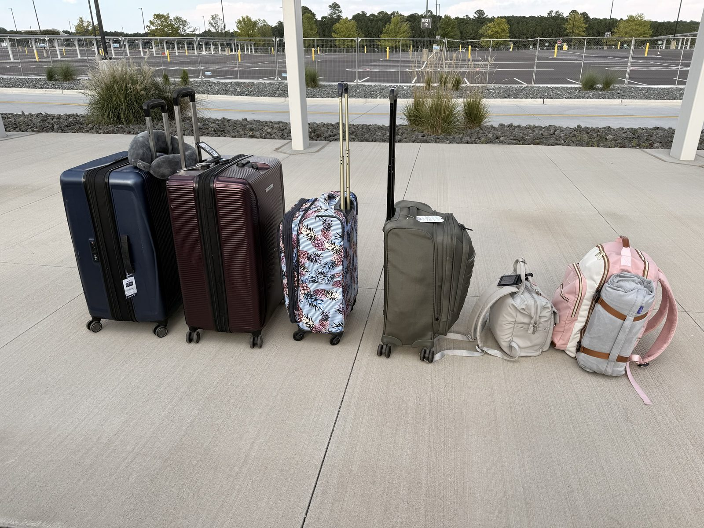
All of it, at the curb the next morning.
Observe the North American Husband, three days out from departure, doing something the species is not generally known for: being ready early.
I want to be honest about this one, because it cuts against the version of myself I usually narrate. I spent the whole weekend before we left actually packing — methodically, a little obsessively, laying things out on the bed in categories like a man conducting an inventory of his own competence. Hiking boots. The good rain jacket. A wool hat I'd owned for two years and never worn, finally getting its debut. By Sunday night, two full days before the flight, both bags were zipped, weighed, and standing by the door like they were waiting on me instead of the other way around.
Species note: even the enthusiastic, scattered type occasionally surprises himself.
Which left me with an unfamiliar problem: nothing left to do. I'm not built for idle competence. Enthusiasm needs somewhere to go, and with the packing finished, mine had nowhere left to point itself except at the suitcase, which I opened and re-checked more times than I'd like to admit over the next two days — not because anything was missing, but because some part of me distrusted a version of events where I'd actually gotten it right the first time.
Meanwhile, Kris was three hundred miles away in Orlando, at a travel agent conference by day and, based on the texts, riding roller coasters with friends by night. She sent me a video of herself screaming on something called the Iron Gwazi with the kind of joy that made me simultaneously glad I wasn't on it and a little sorry I'd missed it.
"You would have hated it," she confirmed, when her Uber finally pulled in two nights later — the actual eve of the flight, cutting it considerably closer on her end than mine.
The Wifey returns to the nest carrying: one rolling suitcase, one tote bag shaped like it had recently contained a stuffed animal won at great personal risk, and a phone she is already using to show her husband a second, even more alarming coaster video.
She dropped her bags in the kitchen, looked at the two suitcases already standing by the door — zipped, tagged, suspiciously composed — and looked back at me.
"Who packed these."
"I did. All weekend."
"You."
"I've been ready since Sunday."
She said nothing for a second, the specific nothing of someone recalibrating an entire mental model of her husband, and then unzipped her own suitcase from Orlando directly onto the kitchen floor, because unlike me, she still had actual packing left to do — sunscreen going straight into the Iceland pile, a swimsuit pulled warm from some hotel dryer and folded into a ziplock "for the hot springs," a plan she announced mid-fold like she'd been carrying it around for days rather than inventing it on the spot.
Observe: one member of the pair improvises under pressure and thrives. The other removed the pressure three days early and does not, as it turns out, thrive either way.
I hovered. I want that on the record — hovered, unhelpfully, the way you hover over a project that's already finished, looking for something to adjust. I refolded a shirt of hers that didn't need refolding. I found the passport in my coat pocket and announced it like breaking news, despite the fact that nobody had reported it missing. I packed a second phone charger for the first phone charger, in case the first one, a totally reliable object with no history of concerning behavior, developed doubts about its purpose overnight.
"You're doing the thing," Kris said, not looking up from her own suitcase.
"What thing."
"The thing where you finish something and then can't leave it alone."
She wasn't wrong. I'd spent an entire weekend proving to myself I could be the organized one, and now that I was, I didn't know what to do with my hands. It wasn't the trip making me restless. It was the empty two days before it, with nothing left to prepare and no evidence yet that any of the preparing had mattered.
It mattered the second she walked in.
Species note: readiness, it turns out, was never the variable doing the calming. She was.
We got her bag zipped a little after midnight, her sitting on top of it to force the last two inches the way she'd done since college, me holding it down out of old habit more than necessity, since my own bag had been holding its shape patiently for three days already. For a second neither of us said anything — just two people breathing over a suitcase in a kitchen that, for once, hadn't needed rescuing.
"Look at you," she said. "All ready."
"I've been ready since Sunday," I said again, because apparently I needed her to hear it twice before I fully believed it myself.
I turned off the kitchen light. Through the window, the porch light caught two suitcases lined up by the door, both of them, for once, entirely my doing — and somehow that felt less significant than the woman standing next to them, still buzzing faintly with roller-coaster adrenaline and conference small talk, home at last, which was the thing that had actually been missing the whole restless weekend.
Tomorrow: the migration begins. On time, for once — though not, I'm realizing, for the reason I thought.
Two · Reykjavík, Iceland
Plan B
Observe the North American Wifey, twenty-nine years into a marriage, landing in a country she'd been planning to see for months.
Twenty-nine years is a long time to keep choosing someone on purpose, and somewhere over the North Atlantic it occurred to me that this trip was exactly that kind of choosing — not a grand gesture, just the next entry in a habit we'd built a long time ago and never broken. We landed in Reykjavik at 7 a.m. — cool air, green hills, actual sheep grazing along the road like they had somewhere to be, the Sun Voyager sculpture catching the early light down by the water — and Kris did the thing she does at the start of every trip, whether it's day one or day ten: she got quiet for a second, taking it in, before the logistics caught up with her.
The logistics caught up fast.
Kris will be the first to tell you — has told you, publicly, more than once, because it's practically her business card — that she would never advise a client to land in Iceland without a rental car reserved. She'd been buried in client bookings and conference travel right up until the day before we left, though, and somewhere in the scramble, ours simply never got made. So we walked up to a rental line with no reservation, her folding power wheelchair, and our luggage, and discovered exactly how much that oversight was going to cost us.
"Sit," Kris told me, pointing at a bench, with the calm authority of someone who has said this exact sentence to actual paying clients. "You're my client today. This is why you book with a travel agent. I'll solve the problem."
Observe: the fearless creature does not simply endure a crisis. She takes it as a professional challenge.
I sat. I watched my wife stand in that line for the better part of an hour, only to learn, once she got to the front, that the long line was for people who already had reservations — if you're improvising, you're supposed to go straight to the counter and ask what's actually available. What was actually available, once she asked, was a fleet of tiny electric cars, none of which were going to swallow a power wheelchair no matter how creatively we packed the rest.
Plan B, then: the airport bus into Reykjavik, and a proper reservation made from the road, for pickup downtown the next morning — more room, better price, actual insurance, the whole thing solved before we'd even reached the hotel. I did the math on what the tiny electric car would have cost us in frustration alone and decided Kris had gotten the better end of the trade.
Travel Agent Tip, overheard secondhand: reserve the car early. I did not reserve the car early. I am not the one giving the tips in this relationship.
We checked into Center Hotels Miðgarður, tucked at the quiet end of Laugavegur, close enough to walk into the heart of downtown without paying downtown prices — and it turned out to have its own small spa, indoor and outdoor hot tubs and a sauna, steps from the street, which felt like a very specific kind of luxury: recovery built directly into the architecture.
Reykjavik itself announced its personality immediately — buildings painted every color a building is allowed to be, murals, a street literally striped like a rainbow running toward a church, shops selling wool sweaters at prices calibrated to how charmed and cold you currently were. Accessibility, it turned out, was a mixed bag; the sidewalks were bumpy but manageable, but Kris was surprised by how few storefronts had ramps — enough that she started photographing the ones that did, quietly building a record that no website was going to hand her. That's the kind of detail, she told me, you don't learn until you're actually there, rolling over it yourself.
Lunch was at Bastard Brew & Food, which Kris picked on the reasonable theory that if she was about to drag me to Icelandic hot springs later in the trip, the least she owed me was a brewery first. I had an IPA and a reindeer burger, liked the beer enough to buy an actual glass to bring home, which is either a sign of good taste or a sign I was still slightly delirious from the flight. Kris had fish and chips, crunchy in the specific way that makes you stop mid-bite. We wandered after, shopped a little, and tried, mostly unsuccessfully, to do currency math in our heads — sixteen thousand-something krona for lunch sounded terrifying until you Googled it and remembered that number meant something closer to reasonable.
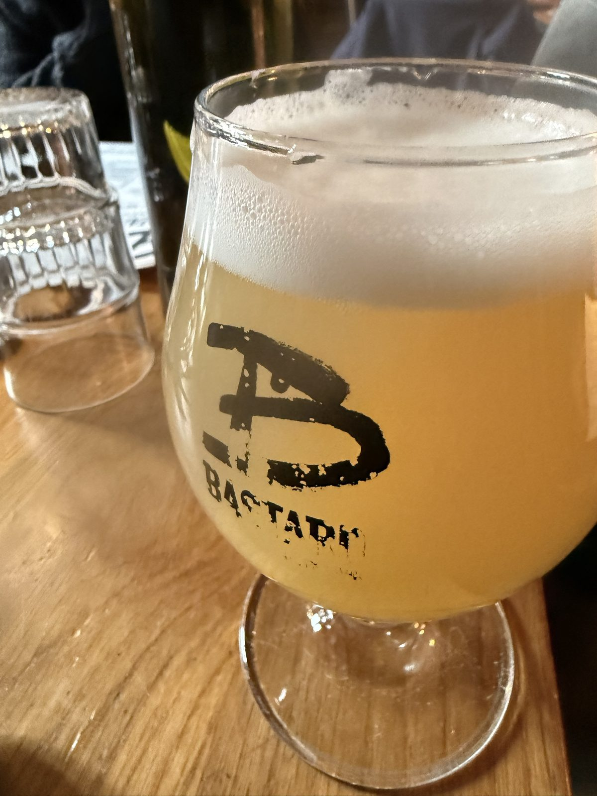
The glass came home with us.
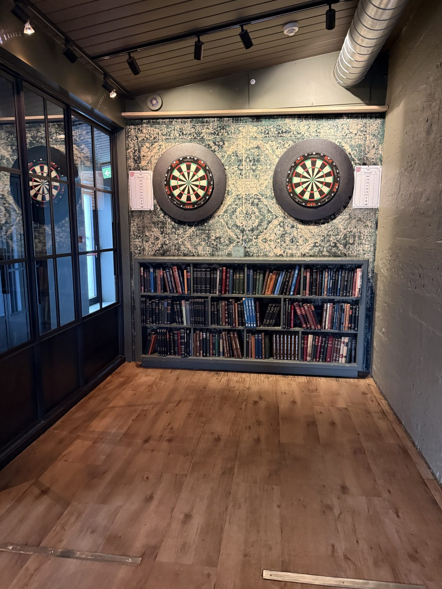
Dartboards and a wall of books.
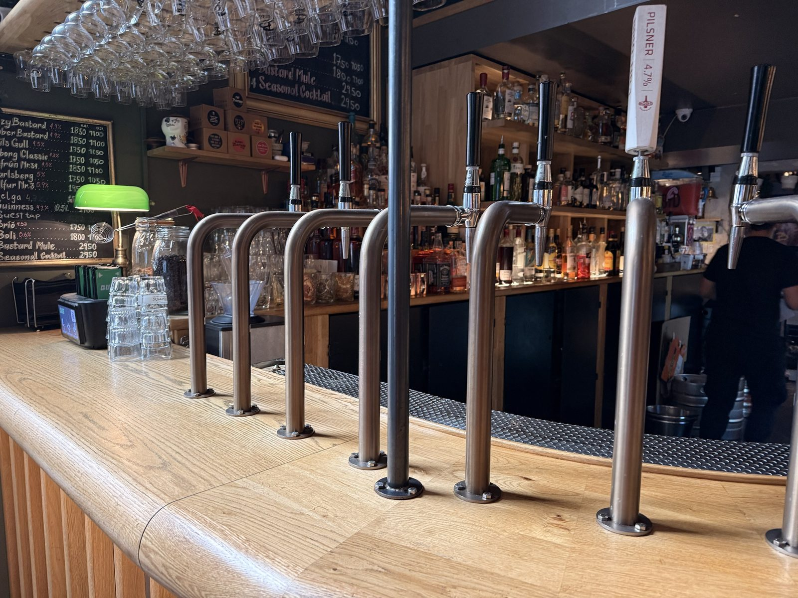
The tap list, priced in króna.
Then the overnight flight finally caught up with both of us, all at once, and we crashed — hard, curtains shut, the specific dead sleep of two people who'd been running on adrenaline and airport coffee since dawn.
Even the fearless creature requires maintenance.
We pulled ourselves together for an 8:30 dinner reservation at ROK, beside Hallgrímskirkja, and the church was the first real wow of the trip — pale stone going straight up into a sky that hadn't decided what time it was yet. ROK does small plates, which suited us fine with only three days to taste as much of the country as we could: shrimp, African lamb, sourdough with cheese and pears, then brownie, mango cheesecake, and Irish coffee to close it out. I don't eat lamb, as a rule. Everyone had told Kris Icelandic lamb was different. Everyone was right.
Partway through dinner Kris spotted the church lit up gold outside the window and told me, mid-bite, that we were going back for nighttime pictures. I got us a cab while she squeezed in one last daylight selfie out front, and standing there later under the illuminated spire, I watched something cross her face — not about the church, I don't think, but about being exactly where she'd been planning to be for months.
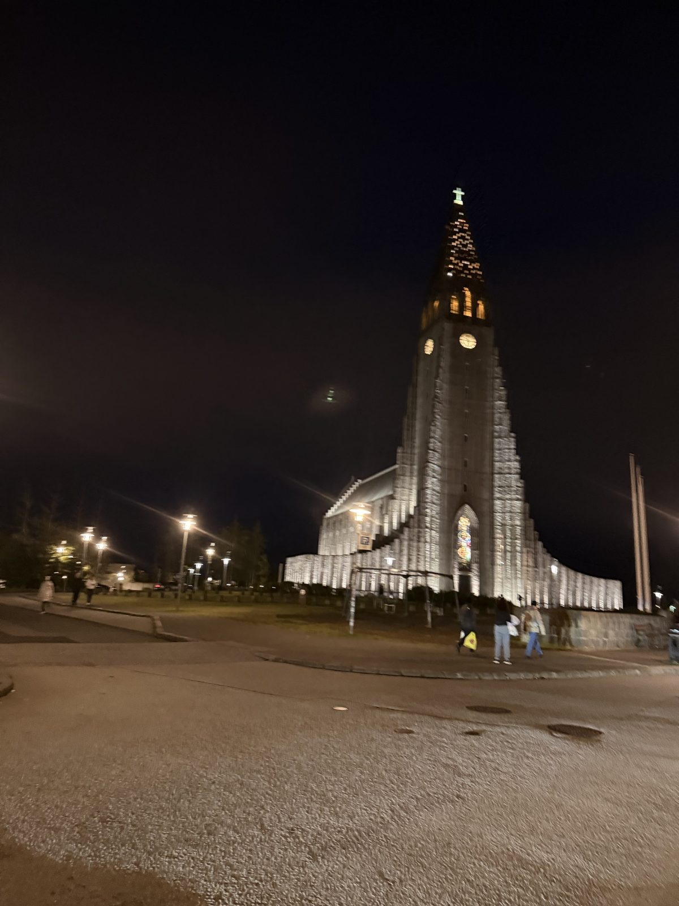
Hallgrímskirkja after dark. Kris was right about going back.
We've been taking anniversary trips since our youngest left for college. I remember the drive home after we dropped him off, Kris asking me, more than once, in the particular tone of someone genuinely unsure of the answer, what am I going to do now?
"You're going to pack," I told her. "And we're going to Ireland."
Two days later, we did. We've been planning the next trip during the current one ever since — twenty-nine years of treating time together as something you protect on purpose, not something that just happens to you.
Species note, end of day one: a rocky, self-inflicted start — no reservation, a folding wheelchair that didn't fit a single available car — and somehow, by dinner, none of it mattered anymore. It had already become one of those things that happened on a different, earlier day, even though it was the same one.
Standing there in front of Hallgrímskirkja that night, I wasn't thinking about rental cars or currency conversions or anything Kris had spent the day quietly solving so I didn't have to. I was thinking that twenty-nine years in, I still liked nothing better than watching her figure something out — and that this trip, mistakes and all, was exactly the kind of thing we'd built a whole marriage out of choosing.
Three · Þingvellir and the Golden Circle
The Almost-Private Concert
Observe the North American couple, freshly mobile, having traded a bus pass for four wheels of their own — a subtle but significant upgrade in status within the ecosystem.
We picked up the rental car from Blue with the specific, slightly disbelieving relief of people who'd spent yesterday getting shuttled around by public transit and were now, however briefly, back in charge of our own itinerary. We drove straight to the hotel for our suitcases, then straight to a bakery called 280, where we bought a genuinely irresponsible amount of pastry — a ham and cheese croissant, a cinnamon roll, a pain au chocolat, an apple juice, and, for reasons I still support, a Coke Zero — and ate most of it in the car before we'd gone two miles, which is, I believe, the correct way to begin a road trip through a foreign country.
Þingvellir National Park is the kind of place that makes you speak a little quieter without anyone telling you to. We took photos with a white church and a cluster of white homes behind us, the light doing something soft and gray-gold that no phone camera fully captures, and then we walked down into the fissure — an honest-to-god crack in the earth where two tectonic plates are pulling apart, slowly, forever, without asking anyone's permission. I found this both awe-inspiring and, on some deep unspoken level, personally threatening. Kris found it delightful. She walked through it like she was strolling through a shopping mall that happened to be between two continents, which, structurally, it was.
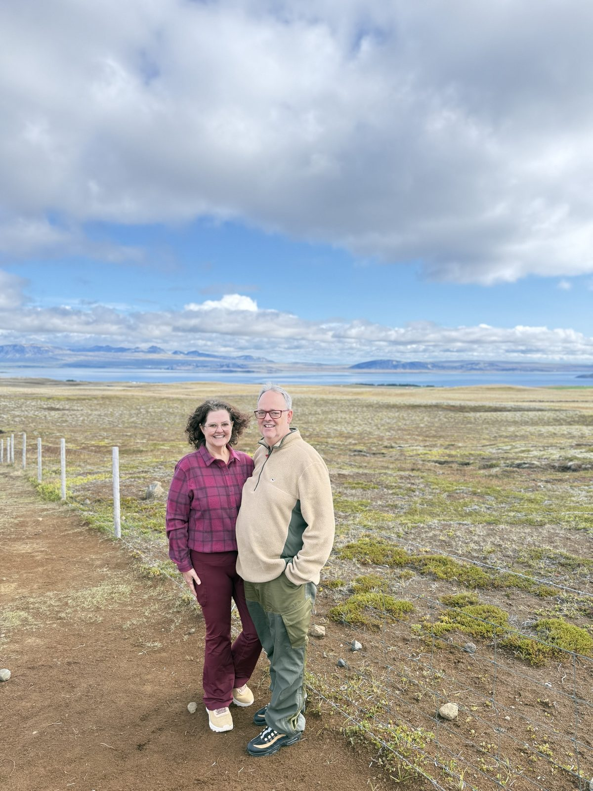
Þingvellir, before we walked down into it.
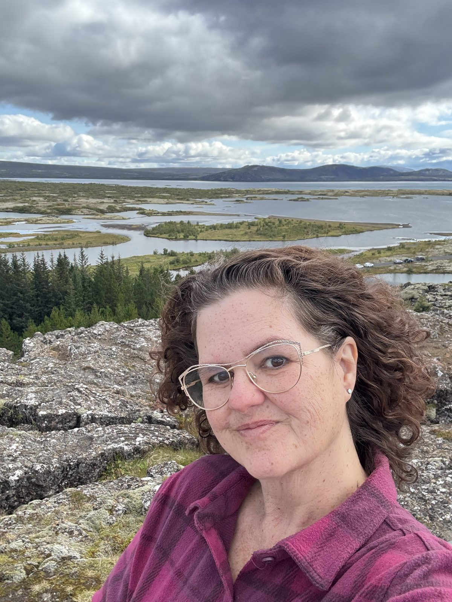
Kris at the overlook.
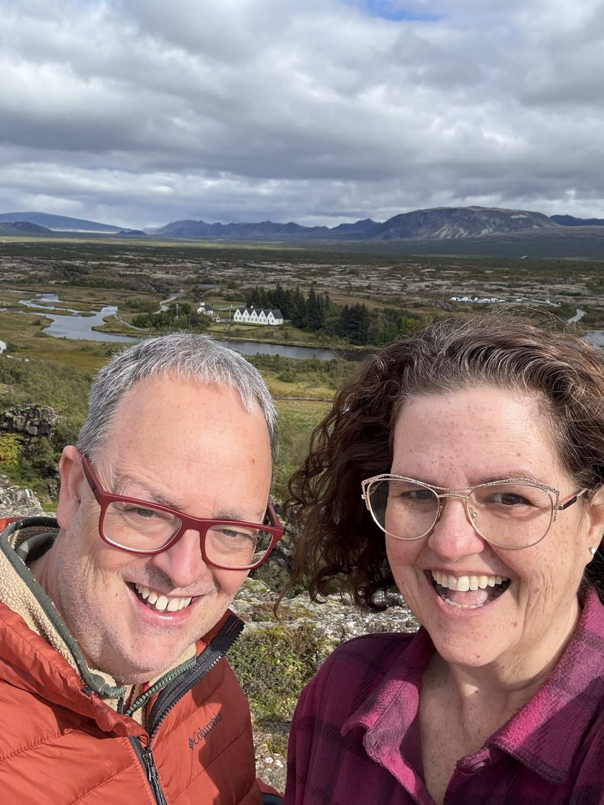
The white church and the cluster of white homes, behind us as promised.
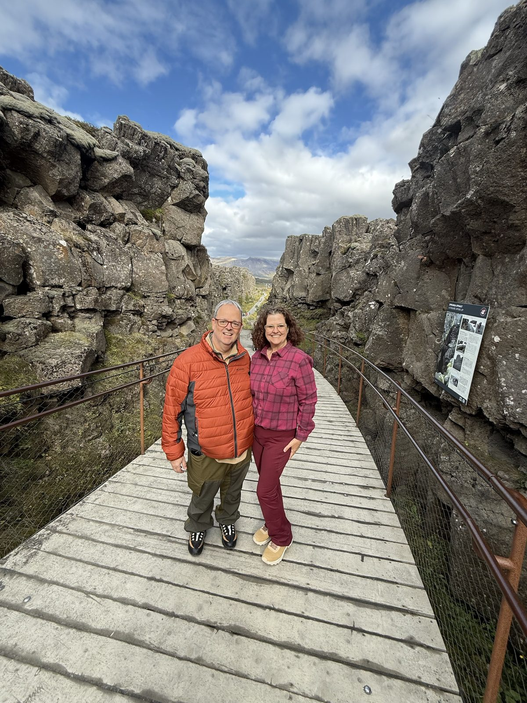
Sprunga opnast: a fissure opens up.
Here we observe the fearless creature entirely at ease inside a geological event.
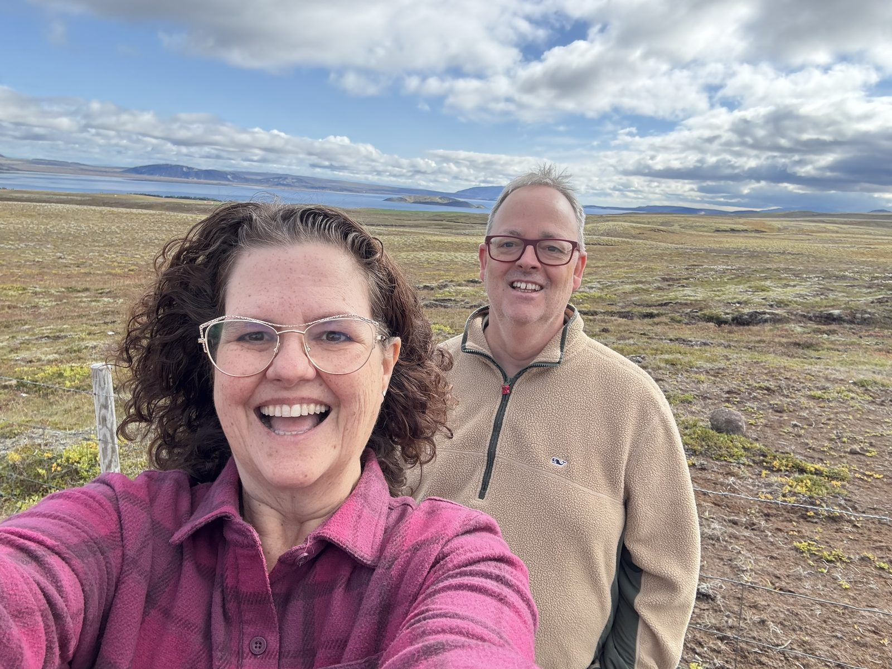
Out on the plain, the lake behind us.
Next was Laugarvatn Fontana, where they bake bread underground using geothermal heat, which is objectively one of the coolest sentences I've ever gotten to be disappointed by, because the tasting classes were full for the day. We stood there for a minute, mildly deflated, smelling bread we would not be eating, and then did the only reasonable thing, which was to get back in the car and go find different bread somewhere else.
We found more than bread. Friðheimar is a restaurant built inside an actual working tomato greenhouse — you eat lunch surrounded by vines, humidity, bees doing their job a few feet from your table — and we walked in expecting soup and left having accidentally attended a concert.
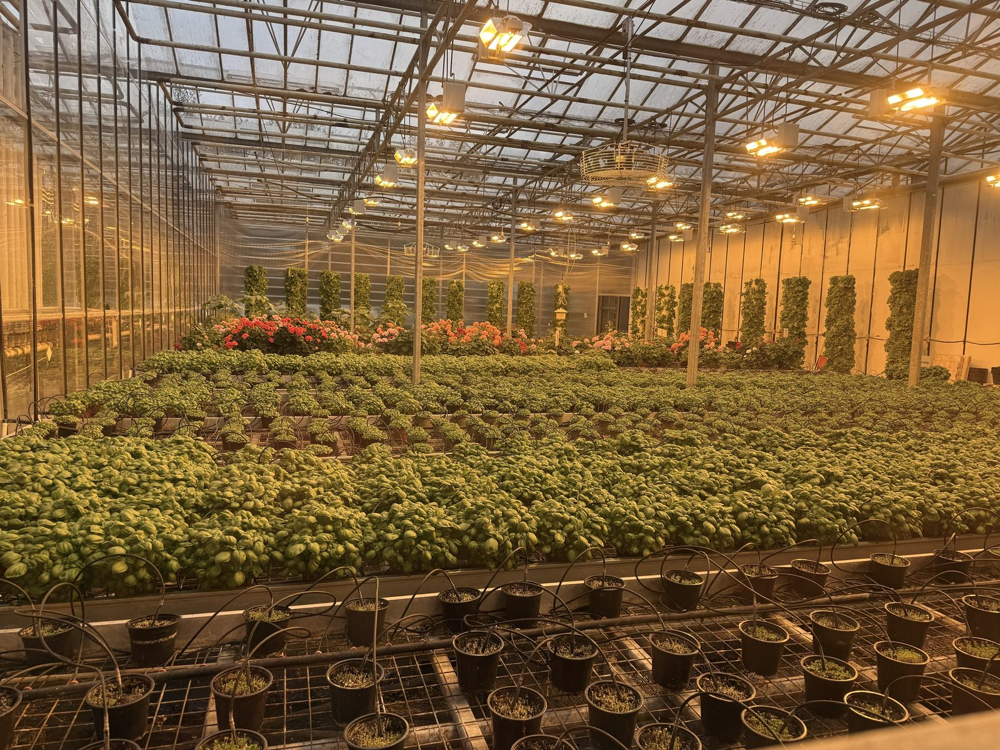
Friðheimar, where lunch grows a few feet from the table.
Here's what happened: there was a show that night in the wine room, sold out, a singer named Bríet, who Kris informed me — with the easy authority of someone who apparently keeps up on Icelandic pop in a way I had not previously known about — is basically Iceland's own fearless pop visionary. We hadn't planned around it at all. We were just there for lunch. The couple directly ahead of us in line got the literal last two seats at a long shared table crammed in the back of the room, twenty-ish people deep, and I remember thinking, with real disappointment, well, that's that.
Then the hostess looked at us, looked at the seating chart, and put us a few tables back from the stage instead.
Observe: the fearless creature is denied one door and handed a better one, apparently at random, apparently by the universe, which occasionally does this and never explains itself.
We ordered — tomato soup that tasted like it had never met a can, warm bread with butter that had opinions, and a shared cheesecake with green tomato jelly, cinnamon, and lime, made right there on the farm, which sounds like it shouldn't work and absolutely does. Barry had an Úlfur Imperial IPA. Kris had a Strawberry Gimlet made with strawberries that had been growing about thirty feet away that morning. And somewhere in the middle of the soup, Bríet walked out onto the little stage with a keyboard player and a guitarist, and what was supposed to be a soundcheck turned, without anyone announcing it, into whole songs.
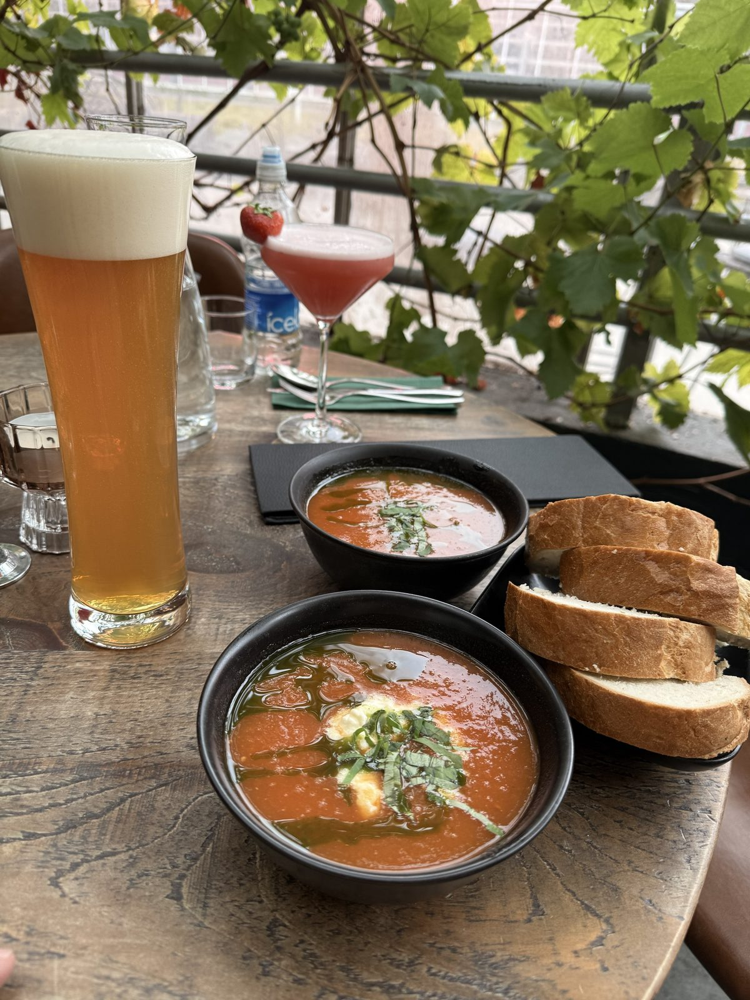
Tomato soup, warm bread, an Úlfur, and a strawberry gimlet.
We weren't supposed to be at this concert. We were early for a different one — one that started later, one we hadn't paid for, one meant for the twenty people jammed into the back — and instead we sat close enough to see her mouth the lyrics under her breath during the instrumental parts, closer than I've been to a performer who was actually famous in her own country, in a room that smelled like tomato vines and warm bread. It felt like being at Live in the Vineyard again, except smaller, except accidental, except better, somehow, for being unearned.
Species note: the fearless creature does not chase luck. She simply keeps walking toward doors, and every so often one of them opens onto something she didn't know she wanted.
We checked into Blue Hotel Fagrilundur that evening, out on the Golden Circle, low light coming sideways across a landscape that looked like it had been left unfinished on purpose. Kris was asleep by seven. Actually asleep — not "resting her eyes," not "just for a minute," genuinely gone, dreaming, she told me the next morning, of day two of the Golden Circle before day one had even technically ended.
I sat up a little while longer, finishing the last of the pastries from a bakery two hundred miles and one lifetime ago that morning, thinking about tectonic plates pulling apart forever and bread nobody got to eat and a concert nobody was supposed to be at, and how somehow all three of those things had turned into one very good day.
Tomorrow: more circle. Presumably more luck, deserved or otherwise.
Four · Strokkur, Gullfoss, Sky Lagoon
Watching Her Explore
Observe the geothermal spectacle known as Strokkur: a hole in the ground that fills, tenses, and then — without warning, without apology — throws a column of boiling water thirty feet into the air, purely because it can.
We stood behind the rope at a respectful distance, along with several dozen other people who had also read that this was a thing worth standing behind a rope for, and when it finally went — that slow swelling dome of water and then the sudden violent release — I actually flinched. Kris did not flinch. Kris had her camera up before the swelling had even finished swelling, a serious piece of equipment with a lens the length of my forearm, and she caught the whole eruption while I was still recovering from the fact that the ground had just done that.
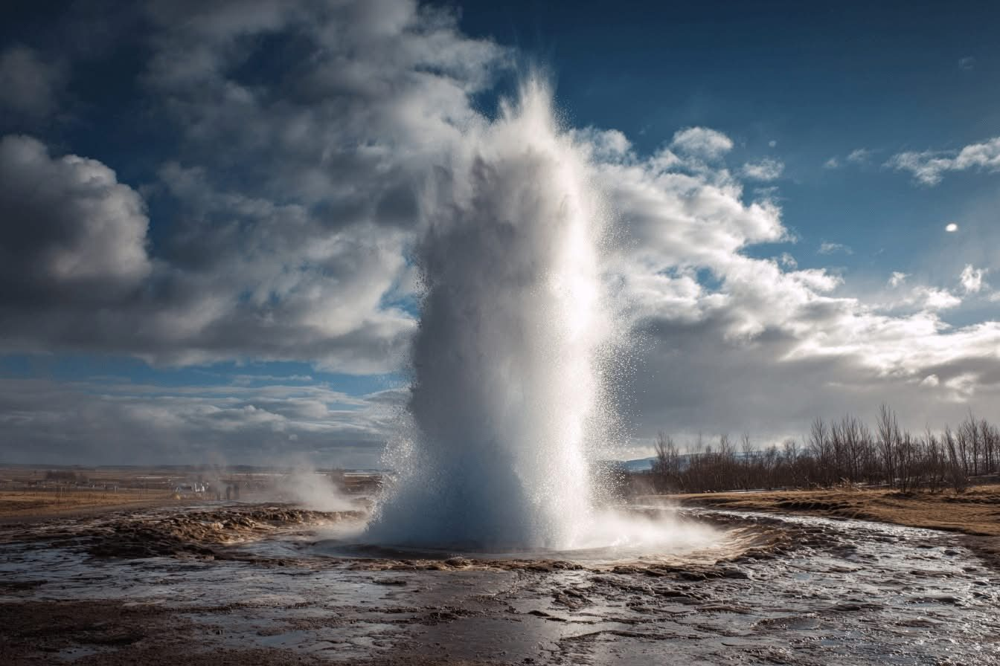
Strokkur, going off.
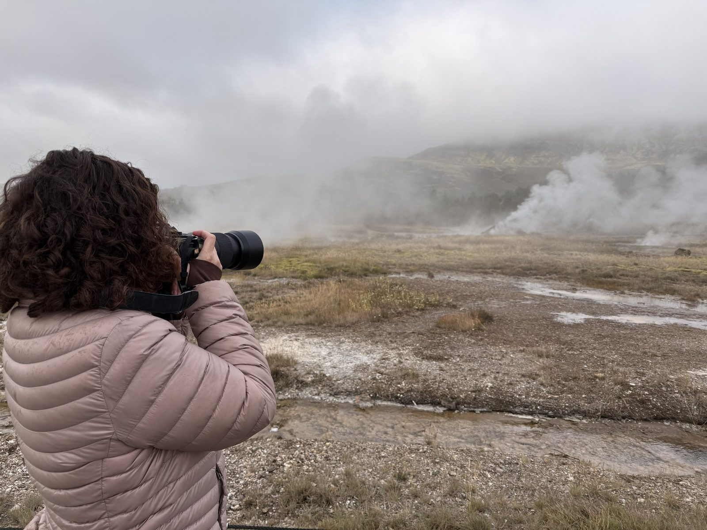
The lens the length of my forearm.
The whole valley smelled like sulfur and felt like being inside a very polite, very slow-motion emergency. Green moss climbed the hillsides in a shade of green I didn't know was available outside of a paint chip labeled something aspirational, and steam drifted sideways off a dozen smaller vents scattered across the flat like the earth was quietly venting its own opinions about the tourists standing on top of it.
I watched Kris more than I watched Strokkur, honestly. She moved along the boardwalk the way she moves through everything — completely present, camera up, chasing the shot, not narrating any of it out loud, just doing it. I posted something about it later that night, something short and probably a little sappy, but I meant every word of it: watching her explore is what brings me so much joy. That's not the nature-documentary voice talking. That's just true.
Species note: the narrator, for one unguarded sentence, drops the bit.
Lunch afterward was a burger and fries at some roadside place I couldn't tell you the name of if you paid me, which is fine, because some meals are only there to refuel you for the next thing, and this was one of those. We didn't linger.
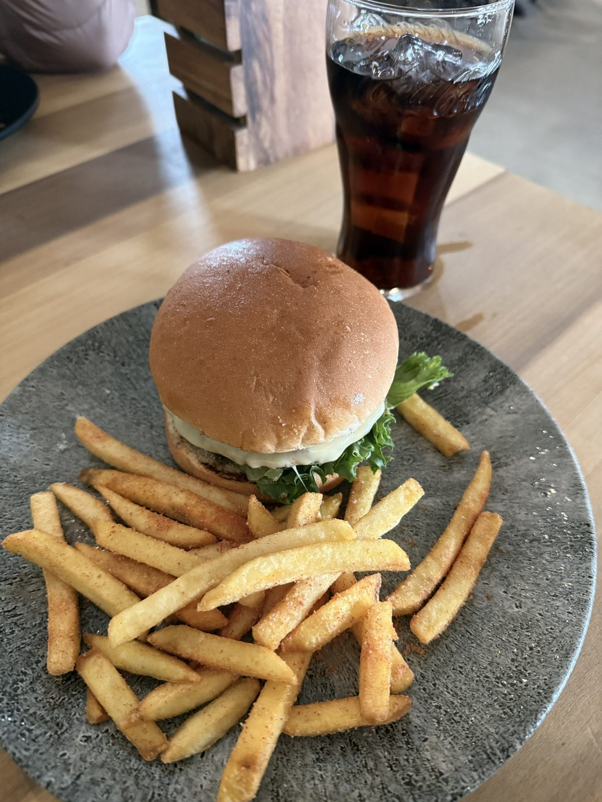
Some roadside place. The name is gone.
The next thing was supposed to be a farm. It was not, initially, a farm.
It was a golf course.
I want to be clear that we did not plan to visit a golf course in the middle of the Icelandic countryside. We were following directions — my directions, generated by me, a man who does not carry a plan so much as a vibe — toward a dairy farm we'd read about, and somewhere in there the vibe took a wrong turn and deposited us at the edge of a fairway, watching two strangers in all black attempt a putt while a small robotic lawnmower crept silently across the hillside behind them like a Roomba that had gotten deeply, seriously into landscaping.
Observe: the couple, seeking cows, discover golf instead. The island continues its policy of opening unexpected doors.
We watched for a minute — there's something hypnotic about watching strangers golf in a country you're only visiting for a week, like tuning into a soap opera in a language you don't speak — and then got back in the car and found the actual farm about fifteen minutes later, no worse for the detour.
The farm delivered cows, as promised. A whole barn of them, big soft-eyed animals leaning into a trough of hay under a banner that said something about farming innovators, which felt both completely sincere and a little bit like propaganda for an industry that had, as far as I could tell, no PR problem to solve. I have no strong feelings about cows generally. I have some now. They're patient. They don't seem worried about anything, which, after a morning involving an actual eruption, felt like good modeling.
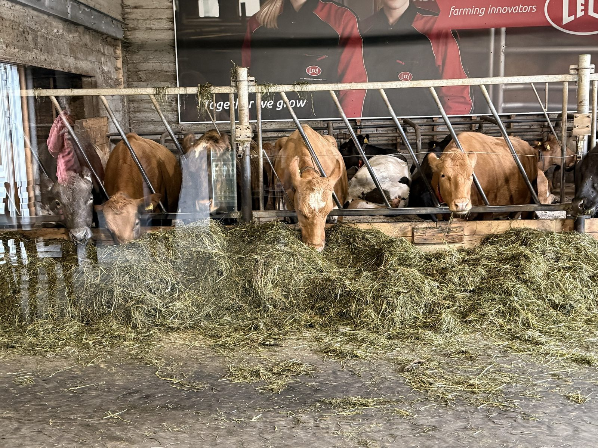
Farming innovators, as advertised.
Then we drove, a long time, to Gullfoss.
Observe: if Strokkur was a hole clearing its throat, Gullfoss is the whole opera.
Where Strokkur gives you one dramatic burst and then goes quiet again, Gullfoss simply does not stop — a river the color of steel throwing itself over two staggered drops into a canyon, throwing up so much spray that it changes the weather immediately around it, a private and permanent rainstorm generated entirely out of spite for anyone standing at the rail without a rain jacket. Kris had her camera up again, leaning out over the railing further than I was personally comfortable with, chasing an angle, completely unbothered by the wind or the mist or the fact that a piece of equipment worth more than either of our jackets was hanging out over several hundred feet of very angry water.
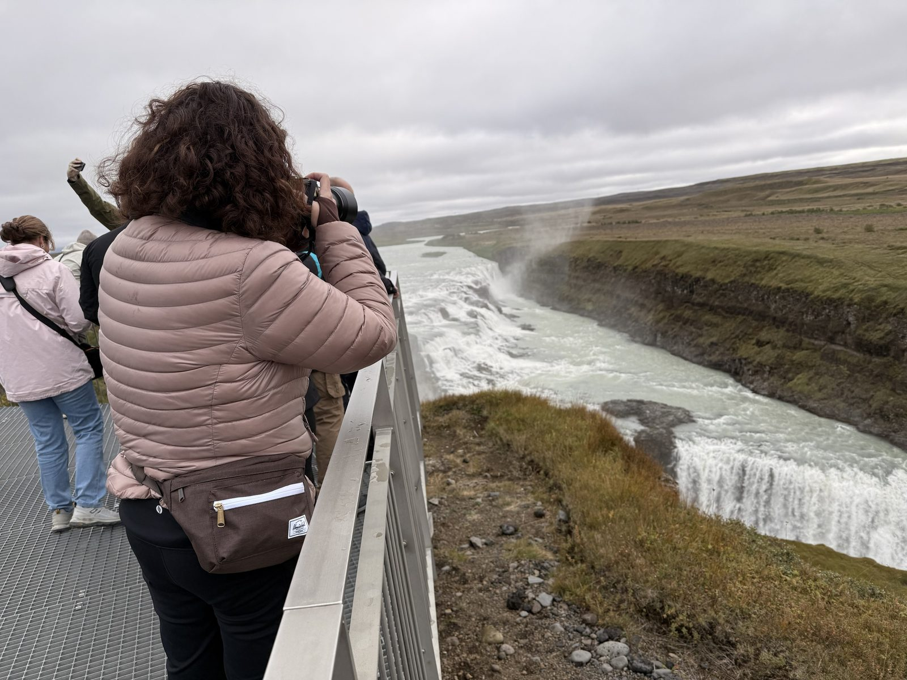
Leaning out further than I was comfortable with.
I didn't say anything about it. I just stood a half-step closer than I needed to, which is its own kind of sentence.
By the time we got back in the car, aimed at Sky Lagoon, I was running on fumes and the last of the 280 Bakery pastries from two days earlier, which I found, slightly stale, in my jacket pocket, and ate anyway.
Here we arrive at what may be the single greatest test of the narrator's stamina all trip: mandatory relaxation.
I didn't want to go. I want that on the record, clearly, before anything else about Sky Lagoon gets written down. It had been a long day of eruptions and wrong turns and cows and a waterfall trying to drown a canyon, and what I wanted was a hotel bed, not a swimsuit. Kris wanted the lagoon. We went to the lagoon.
They make you shower first, which is fair, and also the first of several moments where I realized this was going to be a more supervised form of relaxation than I was used to. Then you're released into the water — an infinity-edge pool that runs right up to the edge of the world, ocean and sky bleeding together out past the rim, genuinely one of the most beautiful things I saw all trip — and I walked in holding my shirt in one hand, above the waterline, the way you might carry a wallet through a car wash.
Nobody else did this. I want to be clear about that too. Every other person in that lagoon had made peace with getting their shirt wet or, more sensibly, had simply not worn one in the first place. I held mine aloft like a flag of a nation that had not yet agreed to relax.
Observe: the male of the species, having survived an actual geyser, remains cautious around optional leisure.
We got drinks — something warm, something with the specific dangerous ease of a drink you can order without leaving the water — and the contrast did its work on me slowly: cold, sharp, blue-sky air on my face, and underneath it, water so warm it felt vaguely illegal. I texted someone back home about it, something like the water is amazing, cold outside blue skies and warm infinity pool, except my phone, in a small act of autocorrect chaos I choose to believe was fate rather than malfunction, changed "infinity" to "Xfinity," so what actually got sent was a report on a warm Xfinity pool, which is not a sentence anyone has ever needed to send, and which I did not catch until much later.
There was a cold plunge. Kris looked at it. I looked at it. We looked at each other.
"Nope," we said, essentially in unison, which might be the single most aligned Kris and I have been on any decision the entire trip.
Instead we did the ritual — the actual seven-step thing they walk you through, sauna first, heat pressing in until you feel like a par-baked idea of a person, then a scrub with something the texture of rock salt that a very calm attendant assured me was doing something for my skin, then a steam room thick enough that I lost track of where Kris was standing until she laughed, somewhere close, and then, finally, a shower to rinse all of it — salt, sweat, whatever remained of my resistance to the entire enterprise — down the drain. I walked out lighter than I'd walked in, which I hadn't expected and wasn't going to admit to anyone at the time.
By evening we were hungry in the specific, slightly delirious way that follows a day like that, and we ended up, as one does, at a hot dog stand.
When in Iceland, apparently, you gotta.
BBP was lit up against the dark, a small flag-topped kiosk with a short, patient line, and the hot dog itself was somehow exactly what the day needed — simple, warm, handed to us in paper with a Coke that came with its own tiny red-and-white cup and a straw striped to match. We ate standing at a little red table outside, not talking much, the specific comfortable silence of two people who had seen a geyser and a waterfall and a golf course and a lagoon in the same twelve hours and had nothing left to say about any of it except that it had been good.
We were not, strictly, done. There was one more stop — a place called Napoli, sourdough pizza, a takeaway counter tiled in white with an ornate gold "N" over the door. We ordered a calzone, no ham. It came out with ham.
What happened next is the kind of small thing that ends up meaning more than it should. The guy behind the counter didn't argue or shrug or offer us a discount and move on. He looked at the calzone, said "my mistake," and — rather than tossing it — turned and handed it, still warm, to a delivery driver who happened to be standing there waiting on an order of his own. Ours got remade, correctly, no charge for the wait. Some stranger on a bike got a free dinner out of somebody else's kitchen error, purely because the guy behind the counter decided that was the better ending to the story than a bag in the trash.
Species note, end of day: a burst of water, a waterfall, a wrong turn, a lagoon, a hot dog, and a kindness. In that order. On purpose, none of it — and somehow, all of it, exactly right.
I thought about that calzone the whole walk back to the hotel, longer than I thought about the waterfall, if I'm honest. Kris scrolled through her camera roll next to me, checking the shots from Strokkur and Gullfoss, quiet and pleased with herself in the particular way she gets when she knows she caught something good. I didn't say anything. I'd already said the only thing that mattered, hours earlier, typed out fast on my phone before we'd even left the geyser: that watching her explore is what brings me so much joy. Everything else that happened that day — the golf course, the cows, the shirt I refused to remove, the calzone that became someone else's free dinner — was just the specific, ridiculous shape that joy happened to take.
Five · Reykjavík, boarding day
Rainbow Road
Observe the rule-following system, encountered once before under hostile terms, now met again — this time with an offering of thirty extra minutes.
We returned the rental car half an hour late. I want to sit with that sentence for a second, because the last time we'd dealt with a counter like this one, it had cost us eleven hundred dollars and our faith in Icelandic bureaucracy in the same forty minutes. This time, the same species of clerk looked at the clock, looked at us, and shrugged in a way that communicated, more or less, these things happen. No fee. No lecture. The rule followers, it turned out, had a setting other than immovable, and we'd finally found it, on the one day it didn't matter at all.
Species note: the wall does not always hold. Sometimes it simply isn't there.
From the rental counter we went straight to something called Fly Over Iceland, which I will attempt to describe and almost certainly undersell: you're strapped into a seat that lifts, tilts, and swings you in front of a massive curved screen showing aerial footage of the country, wind and mist machines timed to whatever's on screen, so that for about eight minutes you are, as far as your inner ear is concerned, actually flying over glaciers and fjords and steaming volcanic fields at what feels like two hundred miles an hour. It was breathtaking in the most literal sense — I came out of the harness a little unsteady and completely delighted, having just seen, compressed into eight minutes, most of the landscape it had taken us four days to drive across.
Lunch afterward turned into something neither of us expected. We ended up seated near a couple who turned out to be serious, seasoned world travelers — the kind of people who talk about countries the way other people talk about neighborhoods — and somewhere between appetizers and the check, Kris did the thing Kris does, which is talk about a place with so much specific, genuine enthusiasm that people start listening differently. She wasn't selling anything. She was just telling them the good stuff — the Bríet concert, the fissure, the hot dog stand, all of it — and by the time we stood up, they'd asked for her card and said, more or less, we want you to plan our next one.
Observe: the fearless creature is also, it turns out, extremely good at her actual job.
I watched her do it and thought about the Facebook post from a few days earlier — watching her explore is what brings me so much joy — and realized it wasn't only the exploring. It was watching her be good at things, too, out loud, in front of strangers who had no reason to be impressed and were impressed anyway.
We spent the afternoon looking for a jacket for Kris, which is the kind of errand that should take twenty minutes and somehow took most of an afternoon, because Reykjavik kept getting in the way with things more interesting than jackets — and at some point the search deposited us, without much intention on our part, at the top of a street painted top to bottom in rainbow stripes, running straight toward the church. We never did find the jacket. We found Rainbow Road instead, and took roughly four hundred photographs of it, because you sort of have to.
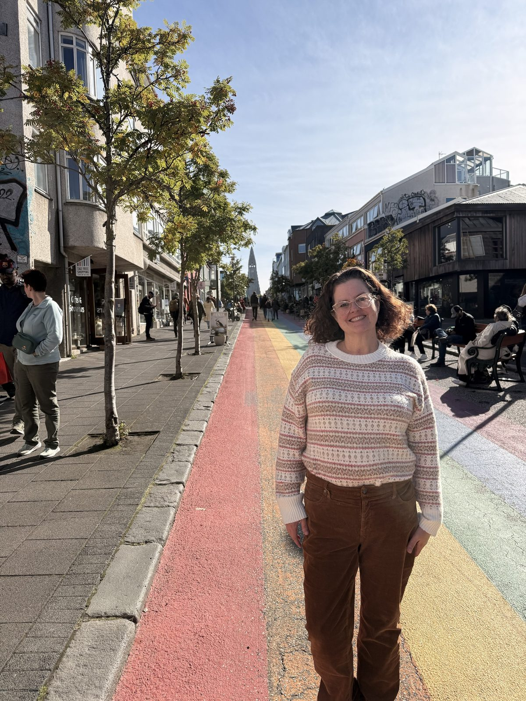
Rainbow Road, running straight at the church.
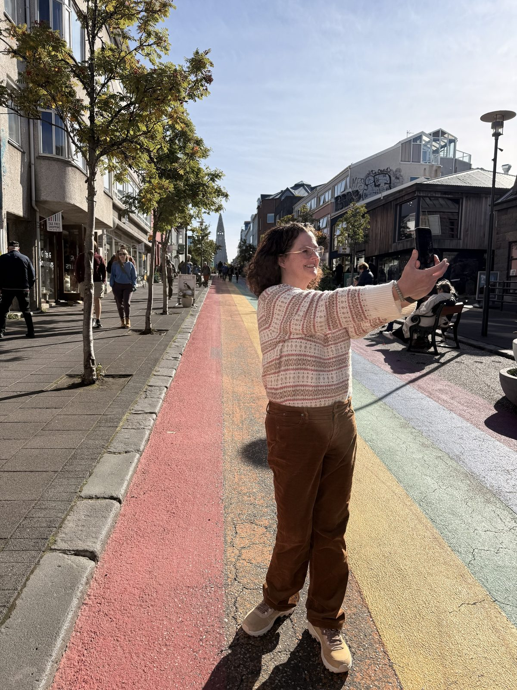
One of roughly four hundred.
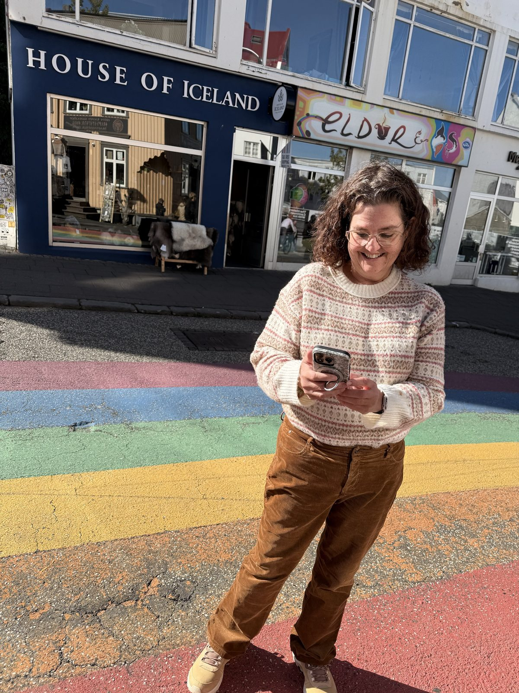
Outside the House of Iceland.
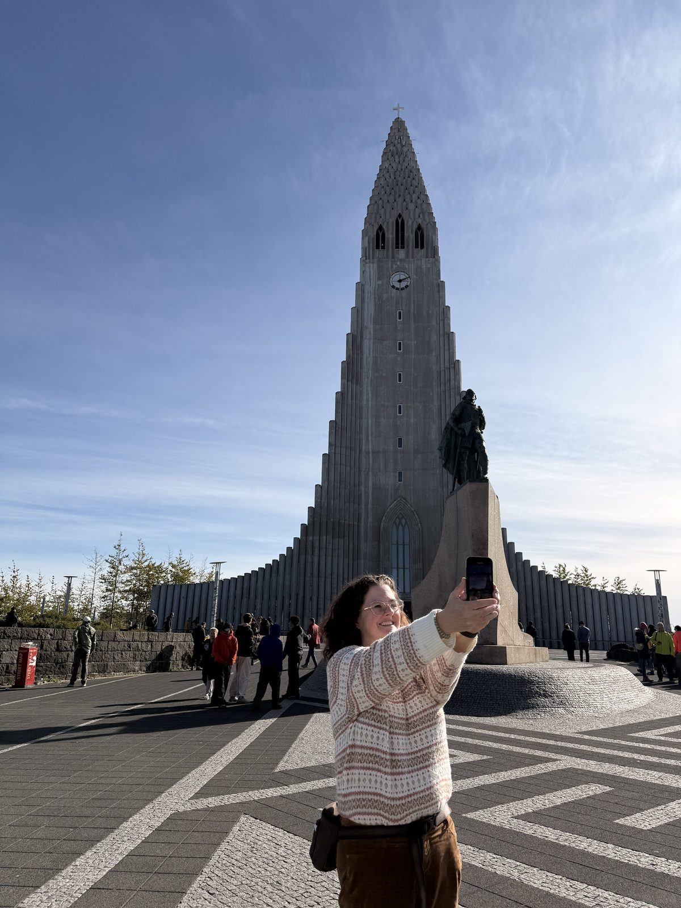
Hallgrímskirkja, at the top of the street.
Observe: the search for one thing reliably produces something better.
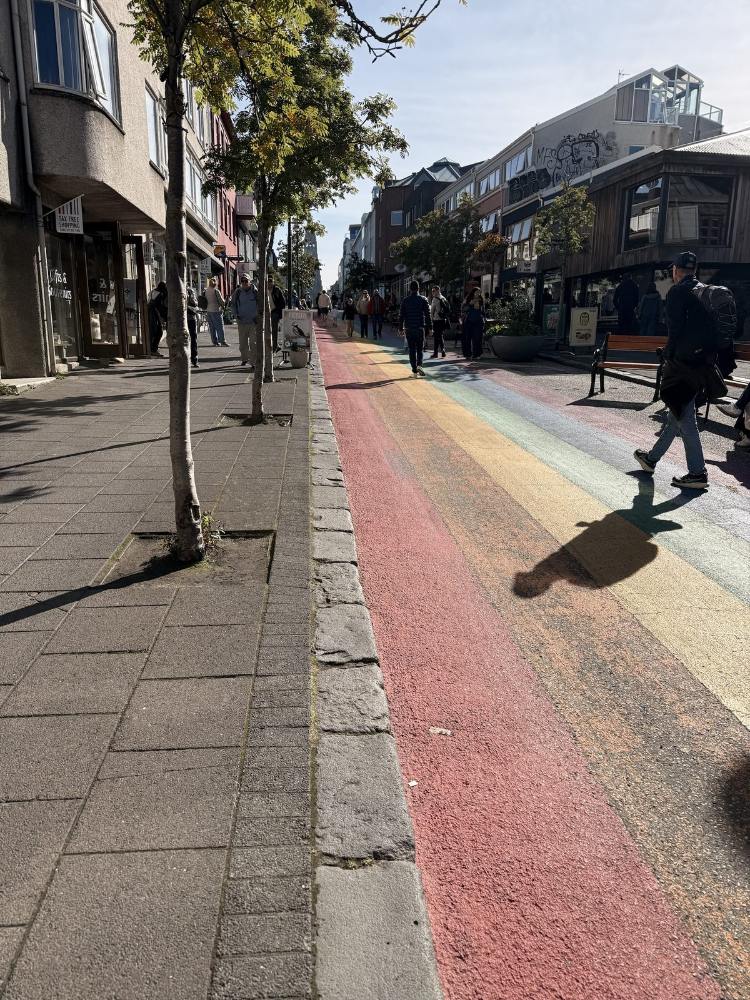
We never did find the jacket.
Eventually the day insisted on ending. A cab to the hotel for our suitcases, another cab to the port, and then — the specific, slightly unreal moment of walking up a gangway onto a ship that was going to be our whole world for the next stretch of the trip — we were aboard. Somebody handed us a drink almost immediately, which felt like the correct way to acknowledge that a chapter of the trip had just closed.
That night, dinner was all-you-can-eat sushi and Coke in the cafeteria, eaten with the specific hunger of two people who'd walked several miles and flown, virtually, over an entire country since breakfast. Later, back in the room, I turned on the television and discovered we had four channels. Four. I sat there flipping through all of them twice, out of some instinct that a fifth might materialize if I just believed hard enough, and it did not.
Species note: after a day this large, the smallness of four television channels is not a disappointment. It's a relief.
Kris fell asleep almost immediately, the specific fast, total sleep of someone who has spent a full day being fearless and charming and searching for a jacket she never bought. I lay there a while longer, half-watching whatever the fourth channel had to offer, feeling the ship do the thing ships do — a low, steady sway that isn't quite motion and isn't quite stillness, just the sense of being carried somewhere while you sleep. Tomorrow, presumably, would try to top today. I had my doubts. But then, I'd had doubts before.
Six · Ísafjörður, Iceland
Better Than Boston
Observe the North American couple preparing for a "sunny" 48 degrees as though preparing for war.
Breakfast was eggs and steak, which felt like the correct fuel for a day that had "whale watching" written on it — something with enough weight to hold you through cold water and colder wind. Afterward I put on more layers than the weather technically required: a fleece, thermal leggings under my pants, a hat, gloves, the full costume of a man who has checked the forecast and does not trust it regardless. Kris, watching me dress, did not say anything, which after four days together I'd learned to recognize as its own kind of comment.
We got off the ship expecting a short walk to a boat. What we got was a mile of it — along the water, through the edge of Ísafjörður, the fjords rising up green and steep on either side like the town had been poured into the bottom of a glass. It was, without exaggeration, one of the most beautiful walks of the whole trip, and also one where a sign at one particularly narrow stretch reminded us, unnecessarily but not incorrectly, to watch our step.
Species observation: the terrain here does not forgive distraction, however green.
The boat ride out took fifteen minutes, and then the whales simply arrived, the way whales apparently do when they've decided to show off — breaching, actually jumping, again and again, close enough that the boat's whole deck erupted in noise each time. I've been whale watching before, off Boston, on a boat that mostly delivered distant spouts and a lecture about baleen. This was not that. This was whales auditioning for something. Kris had her camera up, of course, catching frame after frame, while a few passengers nearby turned a distinct shade of green and quietly reconsidered their breakfast choices. We were fine. The eggs and steak, it turned out, were sturdy.
Observe: not everyone aboard is built for celebration in choppy water.
Here's the thing nobody warns you about whale watching, though, and it's not the whales. It's everything around them. The mountains here don't really end — they just keep going, green all the way up until the green gives out and rock takes over, open sea stretching flat and gray-blue in every direction, small fishing boats working somewhere in the middle distance like they had nowhere better to be, and off past all of it, an industrial town doing something I genuinely could not identify — cranes, tanks, low buildings, purposeful and strange against all that green. I took more pictures of the mountains than I did of the whales, honestly, though I'll deny that if asked directly.
The sun stayed out the entire time, which meant the cold I'd dressed so aggressively for never really arrived — it was only the wind, cutting straight through even my overcommitted layering, that made it feel like anything at all. I stood there overdressed and a little smug about it anyway.
Species note: preparation, even when unnecessary, is rarely regretted.
By the time we got back to the ship, something had caught up with us. Not the whales, not the walk, not any one thing — just the accumulated weight of four enormous days in a row, geysers and waterfalls and rainbow streets and now fjords, arriving all at once like a bill finally coming due. We didn't talk about it much. We didn't have to. We just quietly, mutually, without either of us suggesting it out loud first, decided the rest of the day belonged to the room.
Observe: even the fearless creature requires, eventually, an entire day of doing nothing at all.
We rested. Properly — not a nap between activities, but the whole day, given over to it, the ship rocking gently underneath us while somewhere out the window Ísafjörður's green mountains slid slowly out of view. I don't have a joke to put at the end of this one. Some days the story is the mountains, and some days the story is admitting you're tired, and letting that be enough.
Seven · Qaqortoq, Greenland
Stone & Man
Observe the waterfront at Qaqortoq: red buildings, a working harbor, a town that has not been designed to be photographed, and is somehow the most photographable place we'd seen all trip.
I've spent enough years thinking about how work actually gets done — workflows, systems, the unglamorous machinery behind anything that looks simple from the outside — that I couldn't help myself at the harbor. There were fish in buckets on a counter inside one of the red processing buildings, mid-sort, mid-clean, headed somewhere. Not automated, not gleaming — just people doing careful, repetitive work with their hands, the way it's actually done in a town this size. I stood there longer than a reasonable tourist stands in front of a fish-processing building and thought about the whole chain of it: a boat brings this in today, someone here trims it and weighs it and gets it into the cold, it goes into a container, the container goes onto a ship, and three weeks from now it's on a shelf in Copenhagen or Hamburg, priced per kilo, no one there ever thinking about this particular harbor or this particular red building with the smokestack. I found that quietly moving in a way I didn't expect a fish warehouse to be. The town wasn't performing for us. It was just doing what it does, and we happened to be standing there while it did it.
Species note: the narrator, left briefly unsupervised near infrastructure, will always find something to admire in a supply chain.
Kris was not thinking about supply chains. Kris was already three streets ahead of me, camera up, having found a rock wall with faces in it.
They're called Stone & Man — an outdoor sculpture trail where artists have carved human faces directly into the natural granite around town, so you'll be walking along a perfectly ordinary hillside and suddenly there's a face looking back at you, smiling, worn smooth by weather, like the rock had an opinion about something and decided to keep it. Kris leaned back against the stone next to one of them, camera slung around her neck, grinning at me over her shoulder, and I took her picture instead of the sculpture's, because between the two of them she was clearly the better subject.
Observe: the fearless creature, once again, out-charms the local geology.
This became, more or less, the shape of the whole day. I'd catch up to wherever she'd wandered off to — a red church with a black steeple, a barn on a rock outcrop with a ladder leaning against it like someone had just stepped away, a stream cutting straight through the middle of town past a striped grocery store — and by the time I got there she'd already have three good shots and be moving on to the next thing. I stopped trying to keep pace with her curiosity a while ago. I've learned it's not a race. It's more like following weather.
We ducked into a small wooden church at one point — yellow walls, a crystal chandelier, a red carpet running the length of the aisle — and Kris had her camera up before I'd finished blinking in from the sunlight outside. I watched her frame the shot, and then watched her lower the camera slightly, retrain it, and take a second picture of something else entirely: a black rubber ramp, laid flat over the front steps, tucked at the edge of the frame most people wouldn't have noticed at all.
She's been doing this the whole trip. Not loudly, not as a project she announced — she just quietly photographs the places that got it right, the stores with a ramp, the buildings that thought about someone like her before someone like her ever walked in. Nobody asked her to keep that record. She keeps it anyway, the same unglamorous, careful attention she probably brings to everything, whether anyone's watching or not.
I was watching.
Species note: some creatures are fearless in the obvious ways — cold water, cliffside railings, tectonic fissures. Others are fearless in quieter ways, like documenting a world that doesn't always remember to include them, one photograph at a time, without making it anyone's problem but her own to notice.
Later that afternoon we got on a boat — small, covered, the kind with plastic windows that fog up from everyone's breath and clear again when the spray hits them from outside. I genuinely could not tell you, if pressed, exactly what the excursion was called or what we were technically supposed to be looking at. Coastline, probably. Water. Rock. It doesn't matter, and I mean that as a compliment to the day, not a criticism of the tour.
What I remember is Kris next to me, hood up, glasses a little salt-spotted, turning around mid-conversation with a stranger to snap a selfie of the two of us before I'd even registered she'd pulled the phone out — both of us laughing at nothing in particular, the ocean going by gray-blue and enormous outside the fogged plastic window, other passengers packed in around us with their own quiet, private versions of the same good day.
Observe: the narrator, for the length of one boat ride, stops narrating.
I spent most of that ride just looking at her. Not at the coastline, not at whatever the tour guide was saying over a speaker I only half-listened to — at her. The particular way she leans into a conversation with someone she's known for ninety seconds like they're old friends. The way she still gets excited about a good photo the same way she probably did the first time she picked up a camera. The fact that after everything — the wheelchair, the medical supplies, the whole apparatus of getting her across an ocean — she was here, on a boat, in Greenland, being unmistakably herself.
I've spent a lot of this trip cataloguing the ways Kris is fearless — geysers, cold plunges, rental-car counters, strangers at lunch. Qaqortoq didn't really add a new entry to that list. It just gave me a long, quiet boat ride with nothing else to do but notice, all over again, that I'd rather watch her be curious about the world than see almost anything the world has to offer on its own.
Species note, end of day: the fish, the faces in the rock, the ramp nobody else photographed, the coastline I couldn't describe to you if you asked — none of it was really the point. She was the point. She's usually the point.
Eight · Nuuk, Greenland
A Life Worth Living Here
Observe Nuuk at one degree Celsius: a government seat built less to impress anyone than to survive them.
I want to be honest about Nuuk before I get to the beer, because the beer comes later and deserves its own space, uncomplicated by anything else.
It was cold in a way none of our other stops had quite managed — one degree, air that found the gap at your collar and stayed there — and the first thing that struck me about the government center wasn't grand at all. It was practical. A lot of the buildings, the actual working buildings where paperwork gets processed and decisions get made, are built out of shipping containers, stacked and insulated and made functional, because when you're governing a population spread across a landscape this unforgiving, you don't spend your budget on marble. You spend it on buildings that will still be standing, and warm, in February.
Above the containers and the concrete, the view did something the buildings weren't trying to — fjords running out to a flat gray sea, sky enormous and close at the same time, the whole landscape indifferent to how small it made you feel. A statue of Hans Egede stood on the highest rock in town, looking out over the harbor the way statues of founders always look out over things, and below him a red church with white trim held its ground against several centuries of weather, while a skyline of new apartment towers rose up behind it, gray and white and entirely modern. Old town and new town, in the same frame, both still standing.
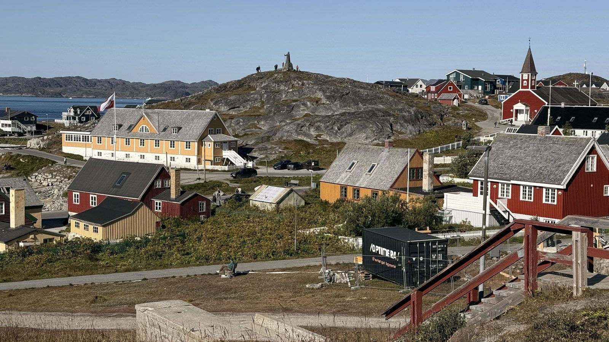
Hans Egede on the highest rock, the red church holding its ground.
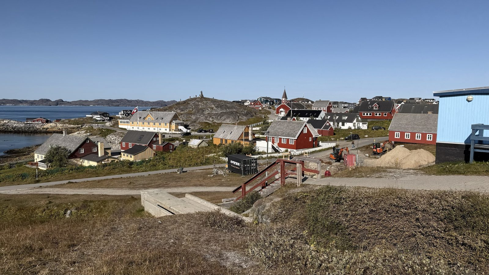
Old town and new town, in the same frame.
There were signs around, here and there, reading Greenland is not for sale. I'm not going to pretend I know everything folded into that sentence. I only know I saw it more than once, on more than one building, and it stayed with me the rest of the day.
Species note: the narrator, briefly, sets down the joke.
What actually got me — more than the statue, more than the signs — was the harbor itself. Stacks of shipping containers, a lot of them stamped ROYAL ARCTIC, Greenland's own line, doing the exact job I'd watched fish do in Qaqortoq a few days earlier: taking something local and sending it out into a much bigger world. Same idea, different town, and somehow seeing it twice made it land harder the second time. This wasn't a place performing hardship for tourists. It was a place doing the actual, unglamorous work of being a country — containers, cold, government paperwork, boats — and doing it in view of a fjord that looked like something out of a painting nobody would believe was real.
I stood there a while, cold hands, warm coat, thinking the same thought I'd had in Qaqortoq, just louder this time: people live here. Not survive here, not endure here — live here, build lives here, raise kids here, disagree with each other about politics here, same as anywhere. There is a life worth living here. I don't think I'd fully believed that about a place this far north until I was standing in it, watching cranes work a shipping dock under a Hans Egede statue with a modern apartment tower rising behind his shoulder.
Observe: the fearless creature and the narrator, for once, equally quiet.
Kris found the sculpture before I did — a bronze knot of seals outside a little shop called Bror og Søster, brother and sister, curled into each other in a way that made the cold feel briefly less important. We stood in front of it long enough for both of us to warm back up to talking, and that's when I made my one and only demand of the day.
"Can we go to the brewery?" I asked. "It's been in business twenty years. It's right there. Please."
We went.
Species note: the narrator's needs are, generally, modest.
The bartender was an older man in a gray vest, working with the unhurried efficiency of someone who's poured a few thousand beers in that exact spot. I asked, out of reflex, if I could see a food menu.
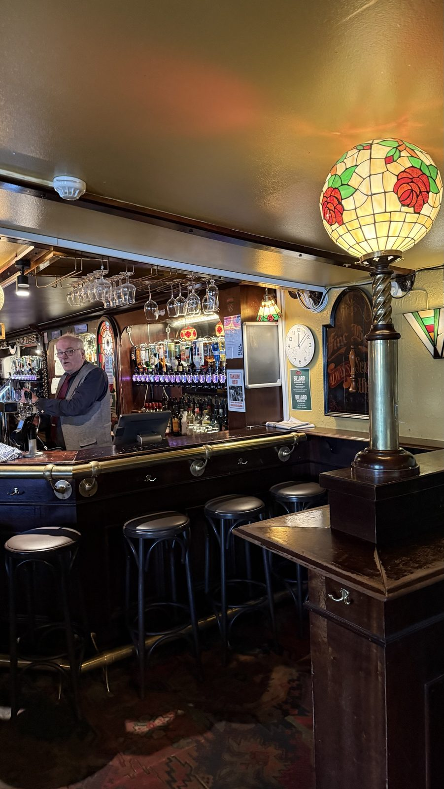
Unhurried, in the exact spot.
"Nope," he said. "Just beer."
That was, without exaggeration, music to my ears. I ordered a Greenland IPA and felt something in my shoulders let go that I hadn't realized was holding on. The place had the good, worn-in bones of an actual local pub — hand-drawn sketches taped up behind the bar, gold letters spelling out BREWERY PUB and DRAUGHT BEER over rows of taps, a back room with an old green-felt pool table under hanging lamps, a couple of dartboards somewhere I never quite got to. Beer on tap, four different kinds, no food, no pretense. I paid $9.31 for that draft IPA in Nuuk, Greenland, and would happily pay it again.
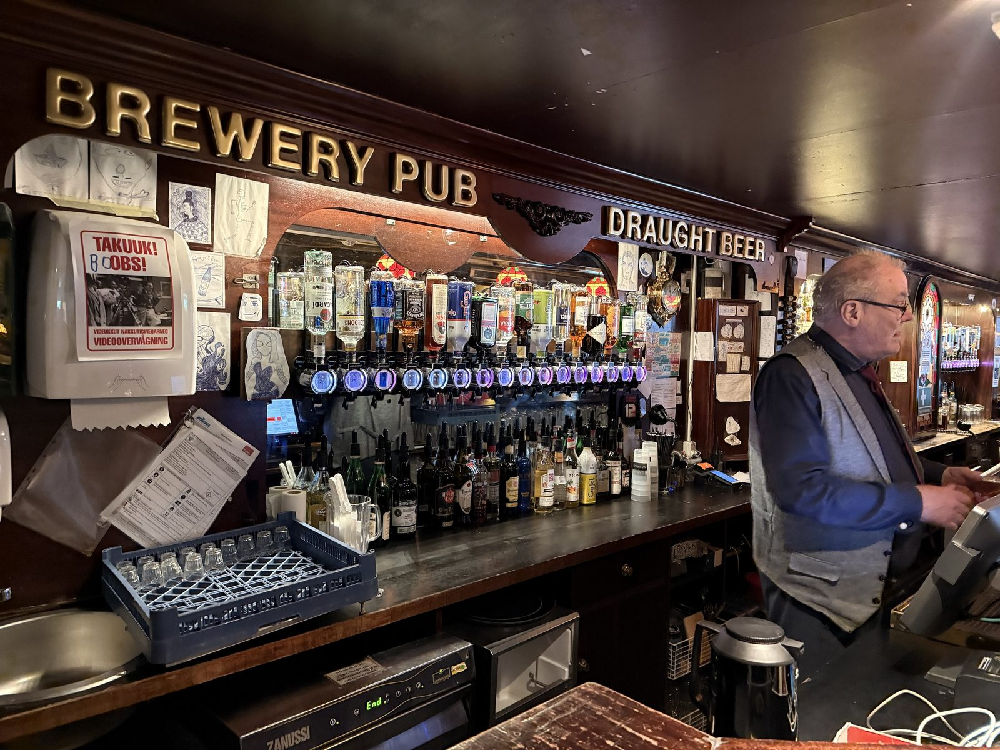
Gold letters, hand-drawn sketches, four taps, no food.
Observe: the fearless creature, unbothered by the cold or the containers or the statue, is now simply glad her husband is happy about beer.
After that we found Cafe Esmeralda, which I'd guess — no plaque confirmed it, just the bones of the place — went up sometime in the 1950s, all worn character and low ceilings. We did some shopping, the kind where you buy one thing you actually need and three things you'll explain later, and then made our way down to the harbor for one last look before heading back.
That view — the containers, the boats, the colorful old houses stacked against the gray modern towers, the whole practical, beautiful, working town laid out below us — was, hands down, the best view of the trip. I want to be precise about that claim, because Kris would hold me to it if I wasn't: best view of the trip. Not the best view of the year — that one still belongs to Norway, a different anniversary, a different fjord, a claim I'm not contesting. But for this trip, this one, Nuuk from the harbor, cold hands and all, was the one I didn't want to stop looking at.
The best view of the trip. Norway keeps the year.
Species note, end of day: some places ask you to admire them. Nuuk simply asked us to notice it was there — working, cold, beautiful, occupied — and let us draw our own conclusions.
Nine · The ship's lounge, after Nuuk
Sit Back and Enjoy the Game
Observe the ship's lounge, transformed for one night into something between a game show set and a teenager's bedroom wall: cardboard everywhere, hand-painted in red, lit like a dive bar that had strong feelings about typography.
We walked in still a little cold from Nuuk, still carrying the day with us — the statue, the containers, the signs about a country not being for sale — and the room did that thing rooms sometimes do, where it simply refuses to let you keep carrying anything. Signs hung from the ceiling on string: SO WHAT IT'S HARD. LIFE'S NOT FAIR "THAT" SHE SAID. I JUST LOVE YOUR TIMELINE. CALL YOUR MUM, in letters big enough to read from the back row, next to smaller cardboard relics — FRIENDSTER, TUMBLR, CHRONOLOGICAL ORDER — like someone had performed an autopsy on the last twenty years of the internet and hung the findings up to dry. Off to one side, a board read SAILOR AHOY over someone else's half-finished doodle, markers left out in cardboard cups for anyone who wanted to add their own.
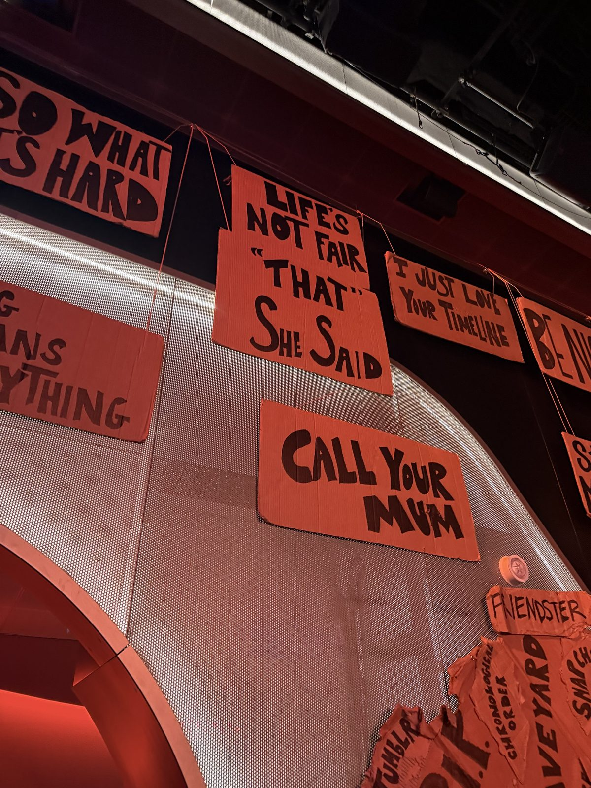
The findings, hung up to dry.
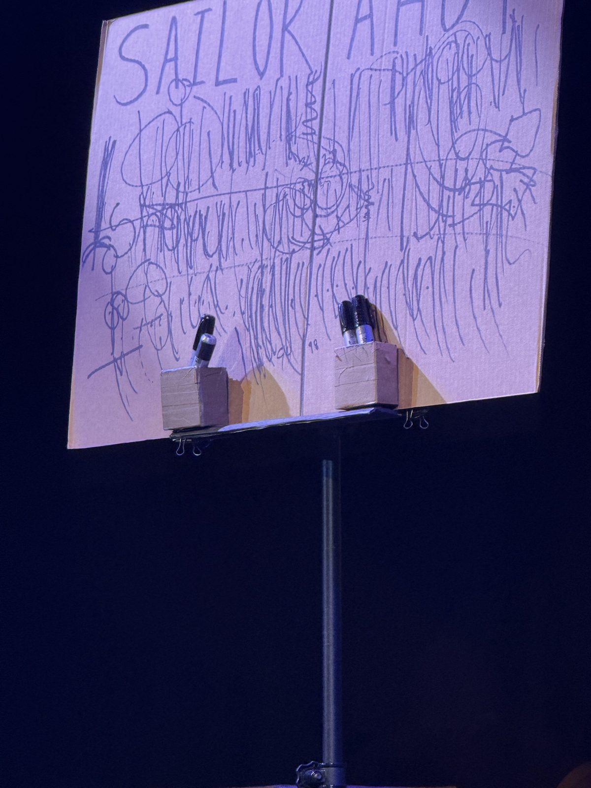
SAILOR AHOY, and the markers left out for anyone.
Neither of us went up to draw on it. We just found seats, still thawing, and let the room do what it was clearly built to do.
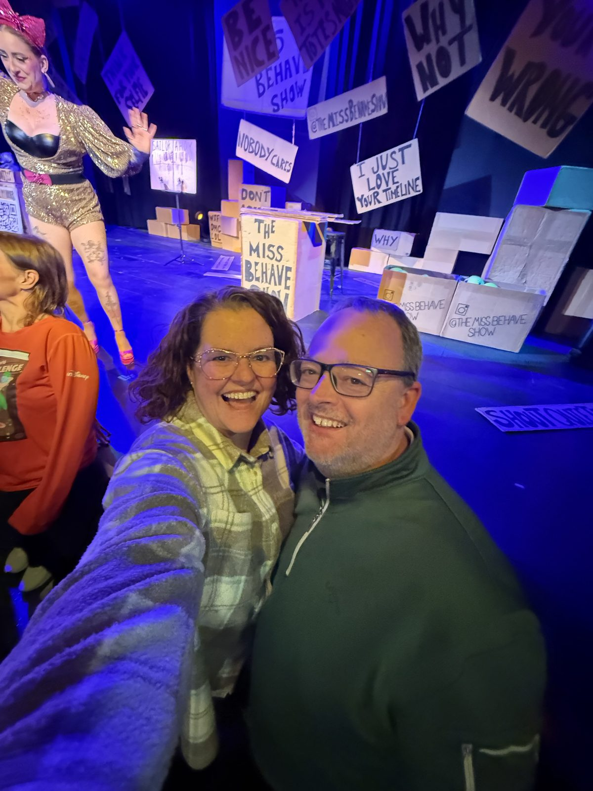
Seats found, coats still on, the game about to start.
Species note: the fearless creature, having spent the day admiring shipping containers, is now perfectly content to sit and watch cardboard signs instead.
The host came out with the specific, slightly unhinged energy of someone who has decided, correctly, that the actual content of a shipboard game show matters less than the commitment she brings to running it. There was a scoreboard. There were rounds. There was, ostensibly, a game with rules, teams, a winner to be crowned by the end of the night.
There was not, as far as I could tell, any actual scorekeeping happening.
She'd run a round — some bit involving the audience shouting answers, or dancing, or doing something mildly humiliating for points — and then turn to the board and "count," marking it up with big, confident, completely illegible strokes, and announce a total that bore no discernible relationship to anything that had just occurred. Team green was ahead. Then, two rounds later, team green was somehow behind, despite having, as far as any of us could tell, done nothing differently. At one point someone in the crowd just yelled "give us more points," and she looked at them, nodded like this was a perfectly reasonable request, and wrote something down. Nobody checked her math. Nobody could have. There was no math.
Observe: the scorekeeper does not track outcomes. She generates enthusiasm and calls it a total.
I watched this happen three, four times before it actually landed on me — not as a joke, though it was very funny, but as something closer to a small, direct hit of clarity. This was, essentially, life, staged for a room full of people on vacation who'd had a few drinks and didn't especially mind being lied to about who was winning. The rules existed. Everyone agreed to act like they mattered. The actual mechanism underneath was mostly noise, mostly improvised, mostly whatever kept the room having a good time — and somehow that was enough. Nobody stormed the stage demanding an audit. We just kept playing.
I thought about the rental car counter in Reykjavik, where the rules had been real and immovable and had cost us eleven hundred dollars in the process of finding that out. I thought about the geyser at Strokkur, which erupts on a schedule no one fully controls, and the Bríet concert we weren't supposed to be close enough to hear, and the golf course we found entirely by accident on the way to a farm. None of it had gone according to plan, exactly, and all of it had turned out fine, or better than fine, mostly because Kris has never once, in twenty-nine years, needed the rules to hold in order to have a good time. She just plays the round in front of her and lets the score sort itself out.
Species note: some creatures require certainty. Others require only a scoreboard, however fictional, and a reason to cheer.
I said something like this to Kris, quietly, somewhere around the third round, and she just laughed and said, "That's basically the whole trip," which — I want the record to show — she said first, before I'd finished making the point myself, which is either very good marriage communication or evidence that I'm not as subtle as I think I am. Possibly both.
What do you do when you realize life is actually a system with no rules? the show asked us at some point, in the same big red cardboard lettering as everything else. You sit back and enjoy the game.
I don't know that I'd have believed that sentence at the start of this trip. I might have argued with it, the way I argue with most things I don't have a plan for. But four countries and one questionable rental-car situation later, sitting in a repurposed ship lounge watching a woman invent a scoreboard in real time while a room full of strangers cheered for numbers that meant nothing, it felt less like a slogan and more like a description of what we'd actually been doing the whole time.
We didn't win. I genuinely don't know if anyone did, or if "winning" was ever really on offer. It didn't matter. We walked out laughing, the cold from Nuuk finally, fully gone, replaced by the specific warm exhaustion of a good day that had somehow gotten better after dark.
Species note, end of night: the score was fake. The game was real. We played it anyway, and it was, without question, worth playing.
Ten · St. John's, Newfoundland
Always Take the Tour
Observe the North American Husband, alone for the first time all trip, discovering what happens to a nature documentary when its subject stays home.
Kris wasn't feeling well that morning, which meant I went ashore in St. John's by myself, and I want to be honest about how strange that felt after however many days of narrating this trip as a two-person operation. There was no one to point the camera at. There was, in fact, no camera pointed at anything, because the one member of our household who reliably remembers to photograph things had stayed in bed with a blanket and a very reasonable amount of sympathy from me before I left.
Species note: the narrator, unaccustomed to solo fieldwork, proceeds anyway.
I walked into downtown St. John's with a plan, or at least the outline of one: find the best pub in the city, have a pint, feel accomplished. I found it. So had approximately two thousand of my fellow passengers, all of whom had apparently done the exact same internet search I had, at the exact same hour, and were now standing in a line that wrapped around the building like the place was giving away something better than beer. I stood there a moment, recalculated, and left. Come on, man.
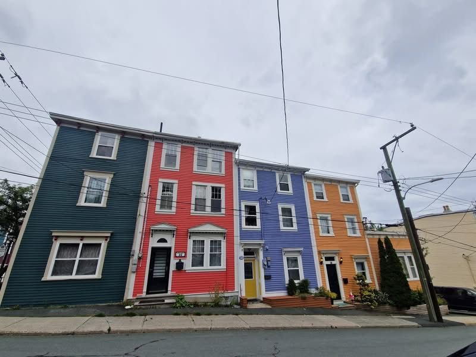
Downtown, before the plan fell apart.
The weather, meanwhile, was doing its own quiet betrayal. Sixty-two degrees, mild, entirely reasonable — and I had worn my warmest fleece, the one I own specifically for weather far more hostile than this, the one I apparently never wear except on the one day it's aggressively unnecessary. I walked back toward the ship overheating, slightly defeated, a man who had been locked out of a bar and overdressed for the privilege.
Observe: even alone, the pattern holds. Prepared for the wrong thing, every time.
I changed clothes, regrouped, and did what I now recognize as my actual coping mechanism when plan A collapses: I bought a tour. Not a specific one, not one I researched — just the first reasonable option that promised to show me "the big stuff," because at that point I trusted a bus with a guide more than I trusted my own morning.
It was, without exception, the correct call.
Signal Hill came first — up a long, windswept climb to Cabot Tower, stone and turreted, standing over the harbor like it had been doing the job for a century, because it had. From up there the whole city arranged itself below: the Narrows pinching the harbor down to a slot barely wide enough for our ship to have threaded through, a lighthouse and a cluster of white buildings clinging to the cliffs at the mouth of it, red-hulled icebreakers docked further in. Old WWII gun batteries were dug into the hillside near the top, concrete bunkers gone soft at the edges with age, now covered in decades of graffiti — somebody's history layered under somebody else's spray paint, both still readable if you looked. I took the photo I was supposed to take, backpack on, grinning like a man who'd just been rescued from a bad morning, which, in a sense, I had.
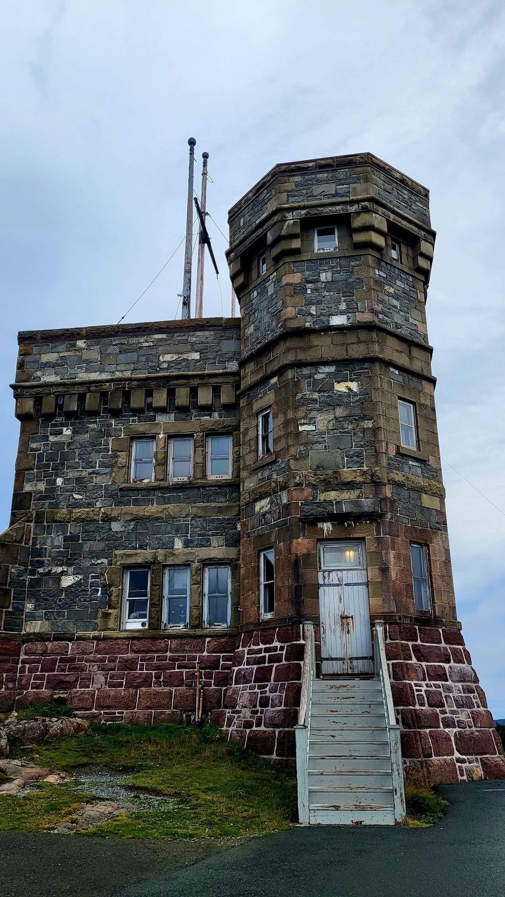
Cabot Tower, still doing the job.
Species note: the view does not care that you are alone. It performs anyway.
Next was Quidi Vidi, and if Signal Hill was the big dramatic gesture, Quidi Vidi was the quiet reward for sitting through it — a narrow fishing village tucked into a cleft in the rock, water so still it looked varnished, colorful stilt houses and fish shacks doubled perfectly in their own reflections. Quidi Vidi Brewing Co. anchored the whole scene in a green building with a deck, and I wandered the dock a while, not doing much of anything, which is a rarer state for me than I'd like to admit.
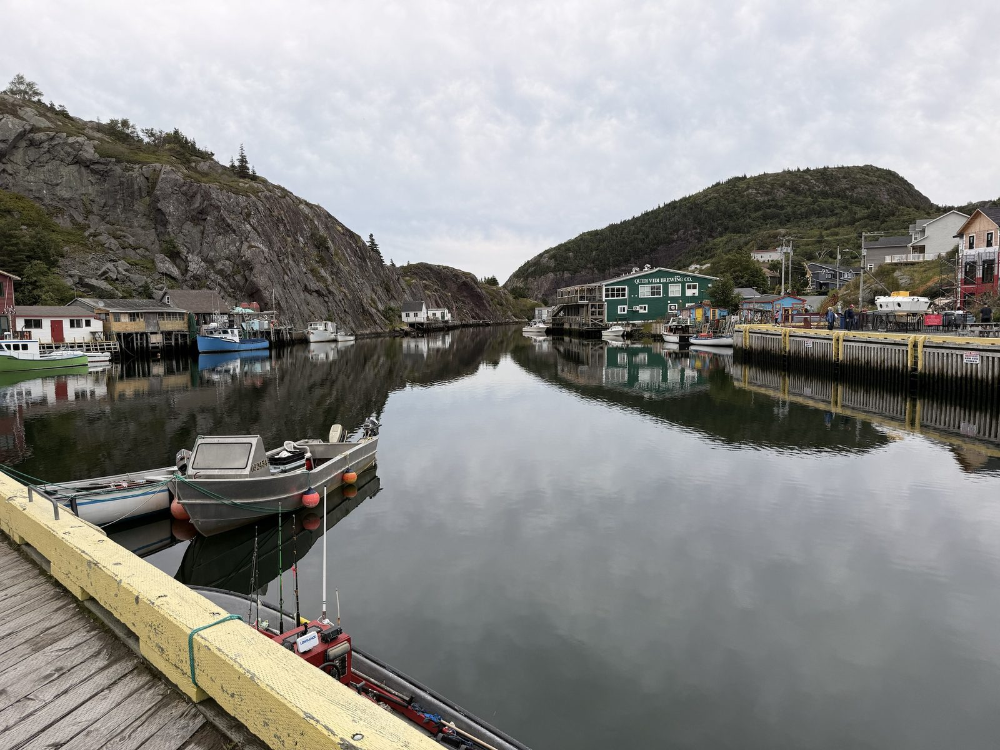
Water so still it looked varnished.
Then I met the dog.
He was enormous — a full, unbothered wall of black fur, the kind of Newfoundland you picture when someone says the word Newfoundland, sitting on the dock railing with his tongue out, surveying the harbor like he owned shares in it. He did not care that I photographed him at length. He did not care about much of anything, which I found, honestly, a little aspirational. I stood there grinning at a dog for longer than is strictly professional for a fifty-something man traveling alone, and did not regret it.
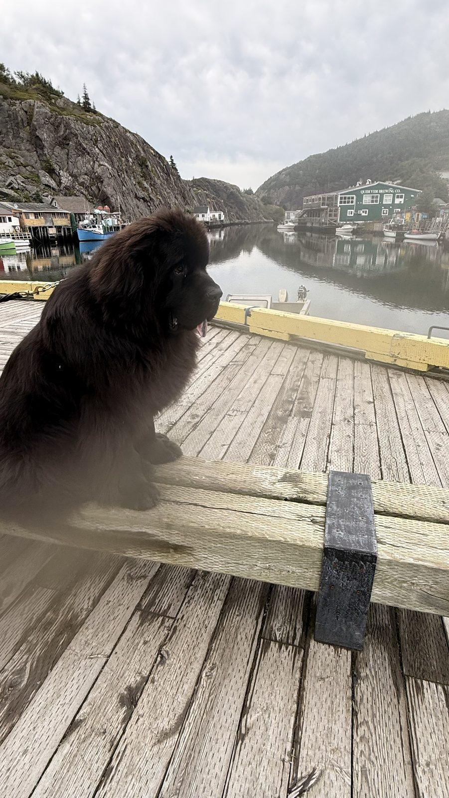
Shares in the harbor, apparently.
Observe: the specimen has found, at last, someone even less anxious than the fearless creature herself.
The last stop was Cape Spear, and I'll admit I didn't fully understand what I was walking toward until I was standing in it — a long path through tall grass gone gold at the tips, purple asters and goldenrod scattered through it like someone had seeded the whole headland on purpose, old WWII bunker remnants sunk low into the hillside along the way, quieter here than at Signal Hill, less commented-on, just present. Then the grass gave way to open rock, a white lighthouse with a red-roofed keeper's house standing against a sky that couldn't decide what it was doing, and past all of it: nothing. Just the Atlantic, running flat and gray to a horizon with nothing on the other side of it but Europe, a few thousand miles off.
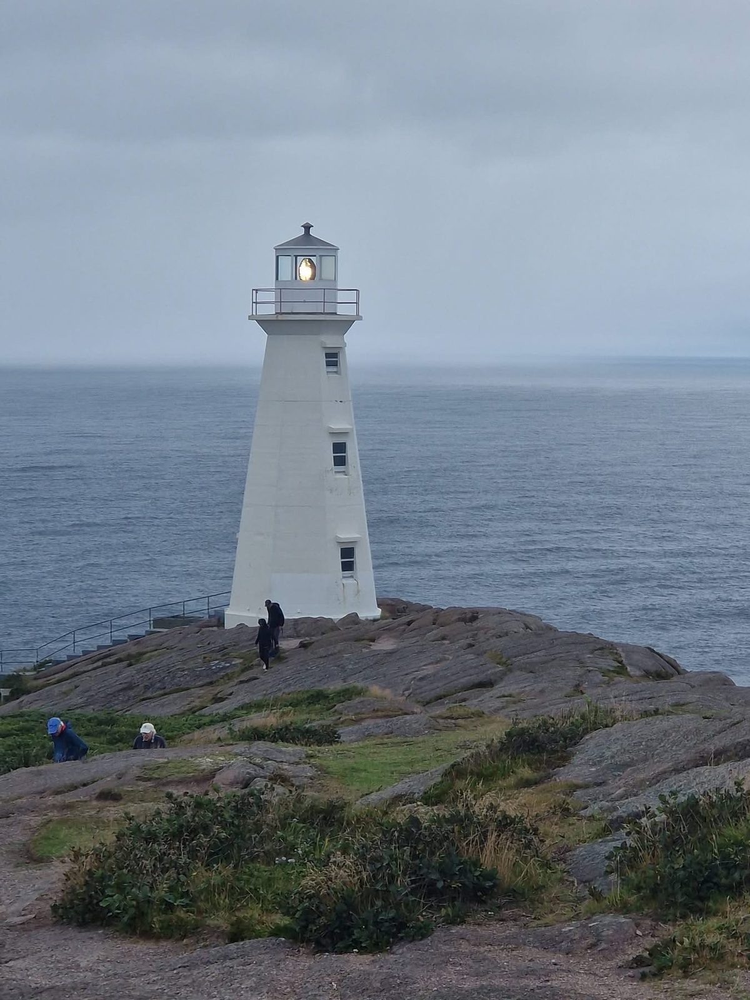
The edge of the continent, lamp on in the afternoon.
There's a plaque set into a boulder up there — Cape Spear, Cap-Spear, the most easterly point, coordinates and all — and I found it and took the photo I clearly needed to take, backpack strap digging into my shoulder, pleased with myself in the specific way you're pleased when you've reached the edge of something on purpose.
Species note: the narrator, standing at the furthest point from everything familiar, discovers that "furthest" and "alone" are not, it turns out, the same feeling.
I thought about Kris the whole walk back down — not in a mournful way, nothing that needed fixing, just the plain, specific fact of missing her. She's the one who stops at things like this. She's the one who'd have made me wait for better light, or found the detail in the bunkers I walked past too fast, or made friends with the dog's owner and learned his name and probably his whole life story in the time it took me to take four pictures. I did fine without her. I want that on the record — I had, genuinely, a good day, alone, in a place I'd never been, recovering from a locked pub door and a bad fleece decision into something that actually mattered by the end of it. But fine isn't the same as full, and I noticed the difference the entire ride back to the ship.
We'd explore together again tomorrow. That was enough to hold onto for one afternoon at the edge of a continent.
Species note, end of day: plan A rarely survives contact with a Tuesday. Buy the tour anyway. It's never really about what's on it.